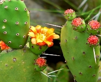
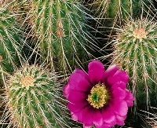
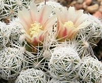

Кактусы в интерьере
У кактуса очень выразительный силуэт, поэтому он будет уместен практически в любом помещении. В просторной комнате, к примеру, хорошо будет смотреться большой разросшийся кактус, похожий на дерево. Его можно разместить в высоком глиняном вазоне в самом углу комнаты — он придаст вашему интерьеру экзотические черты и послужит символическим разделителем пространства. В тесном помещении лучше размещать маленькие кактусы, они создадут в интерьере определенную атмосферу и помогут визуально скрыть некоторые недостатки. Отличное решение: объединить небольшие кактусы в группы и поставить на журнальном столике, на полочках книжного стеллажа, на ступенях лестницы.
Декоративные какутсы
Ка́ктусовые — семейство многолетних цветковых растений порядка Гвоздичноцветные, включает около 127 родов и около 1750 видов, обитающих преимущественно в засушливых областях, включая одну из самых сухих пустынь мира — пустыню Атакама
Красивые кактусы

Плюсы и минусы кактусов
- Неприхотлив
- Поливать не надо
- Кошка есть не будет
- Хоть и цветок, но не подаришь
- Минусы всё
Ещё информация о кактусах
| Название | Цветок | Колючий | Доступен |
|---|---|---|---|
| Опунция | Да | Нет | Да |
| Эхиноцереус | Да | Да | Да |
| Маммилярия | Да | Нет | Да |